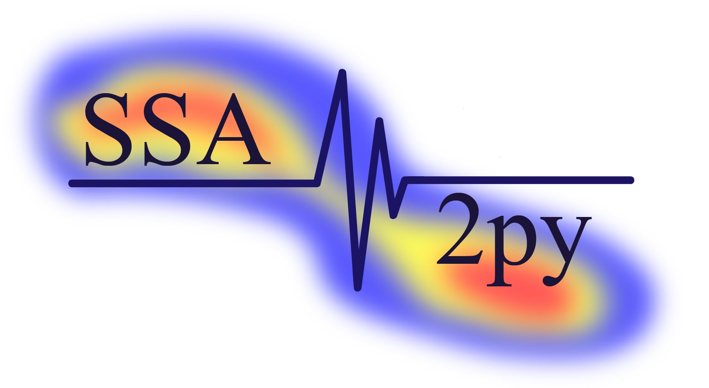

SSA2py Documentation (1.0)
SSA2py is an open-source python project that follows the Source-Scanning Algorithm (SSA), a back-projection implementation by Honn Kao and Shao-Ju Shan (2004, 2007). It provides interconnection with FDSN Compliant Web Services and it is adapted to run in GPU and CPU multiprocessing architectures. The aim of SSA2py is to provide rapid and accurate calculations of SSA method in near-realtime conditions.
{kind=link}
The source code of the project is hosted on github.
Getting Started
- Basic Info
- Methodology
- Installation
Start Using SSA2py
- Configuration
- Usage
- Case Studies
More Info
- Citation
If you used SSA2py in your study, please cite the following conference presentation:
Fountoulakis, I. and Evangelidis, C.: SSA2py: A seismic source imaging tool in Python based on the Source-Scanning Algorithm, EGU General Assembly 2022, Vienna, Austria, 23–27 May 2022, EGU22-3800, https://doi.org/10.5194/egusphere-egu22-3800, 2022.
Hopefully we will have a journal publication soon.
- Studies Used SSA2py
- Discussion
Concering support, questions, bug fixes and more please submit your post at the Github Discussion board:
- Licence
Unless defined otherwise in the files, GPLv3 is set. In any case, it’s open-source and free to use.
- Funding
This project is implemented in the Institute of Geodynamics of the National Observatory of Athens (NOA).
This research is financed by the Hellenic Foundation for Research and Innovation (H.F.R.I.) under the “First Call for H.F.R.I. Research Projects to support Faculty members and Researchers and the procurement of high-cost research equipment grant” (SIREN project).
- Contact
You can contact us for any question concerning the program:
Ioannis Fountoulakis: ifountoul@noa.gr
Christos Evangelidis: cevan@noa.gr
- News